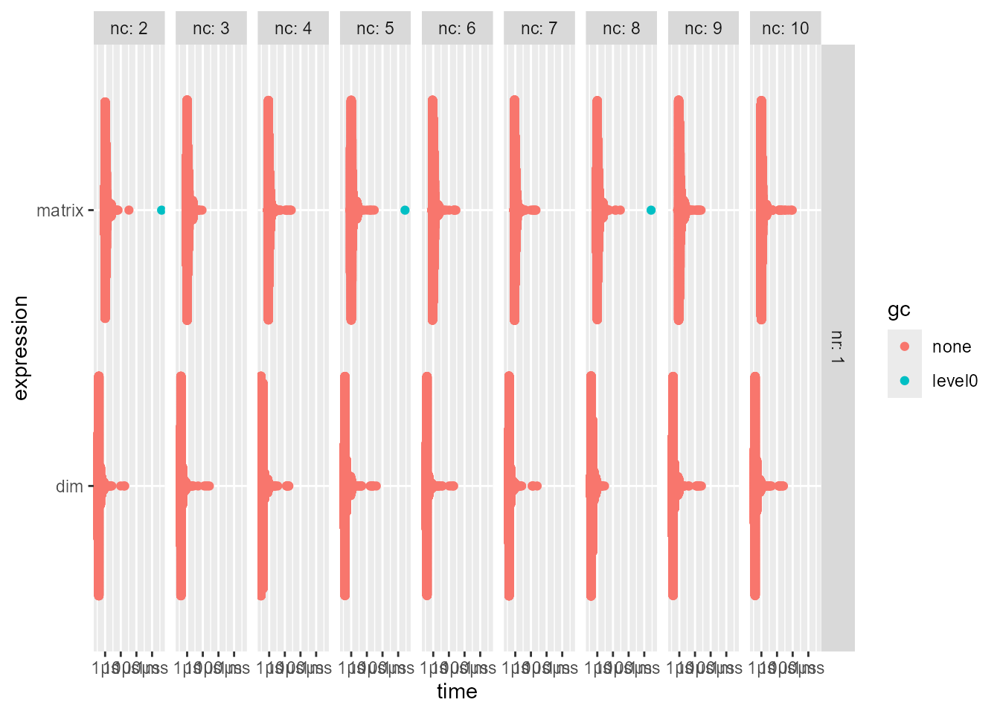

Pacakges
Background
Rで行列を作るとき、matrix()でも`dim<-`()でも作れるのですが、どっちが速いのかなーと比べたくなりました。シミュレーションで1条件当たり何万回～も回すときは少しでも速い方がいいのです。
前にちょこっとやったものの条件をもっと増やしてみました。
Rの備忘録
— Takuto SAKAI (@tsakai_psych) March 22, 2026
2x2と3x3しかやってないけど、byrowで入れないならmatrixよりもdim<-の方が速そう pic.twitter.com/17emiEOTyQ
matrix()
ベクトルを行列にできます。引数nrowで行数を指定するか、引数ncolで列数を指定します。
行数や列数を指定しない場合、n行1列の行列ができます。
基本的には列方向にベクトルを入れていくようですが、引数byrowをTRUEにすると行方向にベクトルを入れられます。
引数dimnamesにlist(行名のベクトル, 列名のベクトル)を入れることで、行名と列名を設定できます。いらないところはNULLを入れると設定されません。
`dim<-`()
オブジェクトに次元を付与したりなくしたりできます。ふつうはdim(obj) <- valueで使うと思いますが、`dim<-`(obj, value)1も使えます。後者の記法はパイプラインと相性がいいです。引数valueには整数ベクトルを入れます。行列なら長さ2のベクトルを入れればいいです。
オブジェクトの長さと次元数がマッチしない場合はエラーを吐きます。
あと、matrix(..., byrow = TRUE)みたいなことはできないっぽいです、多分。
Benchmark
いつも使っているmicrobenchmark::microbenchmark()と、最近なんとなく使い方がわかってきたbench::mark()でベンチマークを回してみます。実際の場面ではintかnumericを扱う場合が多いと思うので、入力はrunif()で作ることにします。
microbenchmark
行数と列数に複数の水準を作りたいので、条件のdfを作って回したいと思います。条件は行列それぞれ1から10までです。1×1は除きます。
# A tibble: 99 × 2
nr nc
<int> <int>
1 1 2
2 1 3
3 1 4
4 1 5
5 1 6
6 1 7
7 1 8
8 1 9
9 1 10
10 2 1
11 2 2
12 2 3
13 2 4
14 2 5
15 2 6
16 2 7
17 2 8
18 2 9
19 2 10
20 3 1
21 3 2
22 3 3
23 3 4
24 3 5
25 3 6
26 3 7
27 3 8
28 3 9
29 3 10
30 4 1
31 4 2
32 4 3
33 4 4
34 4 5
35 4 6
36 4 7
37 4 8
38 4 9
39 4 10
40 5 1
41 5 2
42 5 3
43 5 4
44 5 5
45 5 6
46 5 7
47 5 8
48 5 9
49 5 10
50 6 1
51 6 2
52 6 3
53 6 4
54 6 5
55 6 6
56 6 7
57 6 8
58 6 9
59 6 10
60 7 1
61 7 2
62 7 3
63 7 4
64 7 5
65 7 6
66 7 7
67 7 8
68 7 9
69 7 10
70 8 1
71 8 2
72 8 3
73 8 4
74 8 5
75 8 6
76 8 7
77 8 8
78 8 9
79 8 10
80 9 1
81 9 2
82 9 3
83 9 4
84 9 5
85 9 6
86 9 7
87 9 8
88 9 9
89 9 10
90 10 1
91 10 2
92 10 3
93 10 4
94 10 5
95 10 6
96 10 7
97 10 8
98 10 9
99 10 10ベンチマークを回します。
res_mb <-
df_condition |>
dplyr::mutate(
res = purrr::pmap(
.l = list(
x = nr,
y = nc
),
.f = \(x, y) {
elements <- runif(x * y)
microbenchmark::microbenchmark(
"matrix" = matrix(elements, nrow = x),
"dim" = `dim<-`(elements, c(x, y)),
check = "equal"
)
},
.progress = list(
clear = FALSE,
show_after = 0,
format = "{cli::pb_bar} ({cli::pb_percent} in {cli::pb_elapsed})|{cli::pb_eta_str}"
)
) |>
1 setNames(paste0("r", nr, "c", nc))
)- 1
-
purrr::pmapの戻り値を名前付きにしておくと、後でggplot2::autoplot()するときとかに便利。
■ ( 0% in 1ms)|■■■■■■■■■■■ ( 32% in 2.7s)|ETA: 6s■■■■■■■■■■■■■■■■■■■■■ ( 68% in 5.7s)|ETA: 3s■■■■■■■■■■■■■■■■■■■■■■■■■■■■■■■ (100% in 8.4s)|ETA: 0s結果は以下の通りです。
res_mb |>
1 reframe(
temp = purrr::map(
.x = res,
.f = \(x) microbenchmark:::summary.microbenchmark(x)
),
.by = c(nr, nc)
) |>
unnest(temp) |>
print(n = 999)- 1
-
そのまま
res_mb$resとかdplyr::pull()とかで引っ張ってくると出力が縦に長すぎちゃうので、microbenchmark:::summary.microbenchmark()がdata.frameを返してくるのを利用してdplyr::reframe()して多少短くします。（条件が多くて時間がかかるのであんまり意味はなさそうですが…。）
# A tibble: 198 × 11
nr nc expr min lq mean median uq max neval cld
<int> <int> <fct> <dbl> <dbl> <dbl> <dbl> <dbl> <dbl> <dbl> <chr>
1 1 2 matrix 800 800 939 800 900 7200 100 "a "
2 1 2 dim 200 300 322 300 300 2500 100 " b"
3 1 3 matrix 800 800 1229 1000 1500 6300 100 "a "
4 1 3 dim 200 300 400 400 500 2000 100 " b"
5 1 4 matrix 700 800 905 800 900 5400 100 "a "
6 1 4 dim 200 300 334 300 300 4400 100 " b"
7 1 5 matrix 700 800 907 800 900 4900 100 "a "
8 1 5 dim 200 300 342 300 300 4000 100 " b"
9 1 6 matrix 700 800 894 800 900 4800 100 "a "
10 1 6 dim 200 300 332 300 300 3700 100 " b"
11 1 7 matrix 700 800 932 800 900 5400 100 "a "
12 1 7 dim 200 300 340 300 300 4400 100 " b"
13 1 8 matrix 700 800 1035 800 900 5400 100 "a "
14 1 8 dim 200 300 375 300 300 3600 100 " b"
15 1 9 matrix 700 800 924 800 900 6000 100 "a "
16 1 9 dim 200 300 329 300 300 2000 100 " b"
17 1 10 matrix 700 800 921 800 900 5600 100 "a "
18 1 10 dim 200 300 313 300 300 1700 100 " b"
19 2 1 matrix 700 800 893 800 900 5200 100 "a "
20 2 1 dim 200 300 305 300 300 1800 100 " b"
21 2 2 matrix 700 800 911 800 900 4800 100 "a "
22 2 2 dim 200 200 307 300 300 2800 100 " b"
23 2 3 matrix 700 800 913 800 900 5000 100 "a "
24 2 3 dim 200 200 309 300 300 3000 100 " b"
25 2 4 matrix 700 800 1790 800 900 90000 100 "a"
26 2 4 dim 200 300 334 300 300 3300 100 "a"
27 2 5 matrix 700 800 994 800 900 6300 100 "a "
28 2 5 dim 200 300 399 300 300 5800 100 " b"
29 2 6 matrix 700 800 1055 900 1000 4100 100 "a "
30 2 6 dim 200 300 369 300 400 2400 100 " b"
31 2 7 matrix 800 800 913 800 900 3600 100 "a "
32 2 7 dim 200 300 309 300 300 1400 100 " b"
33 2 8 matrix 700 800 881 800 900 3700 100 "a "
34 2 8 dim 200 300 319 300 300 2500 100 " b"
35 2 9 matrix 1300 1600 1853 1700 1800 10300 100 "a "
36 2 9 dim 400 600 880 600 700 15400 100 " b"
37 2 10 matrix 800 900 1001 900 1000 4800 100 "a "
38 2 10 dim 200 300 385 400 400 1700 100 " b"
39 3 1 matrix 700 800 878 800 900 3200 100 "a "
40 3 1 dim 200 200 299 300 300 2000 100 " b"
41 3 2 matrix 700 800 917 800 900 4700 100 "a "
42 3 2 dim 200 200 304 300 300 1700 100 " b"
43 3 3 matrix 700 800 903 800 900 4900 100 "a "
44 3 3 dim 200 300 335 300 300 3200 100 " b"
45 3 4 matrix 700 800 930 800 900 6200 100 "a "
46 3 4 dim 200 300 320 300 300 1900 100 " b"
47 3 5 matrix 700 800 892 800 900 3300 100 "a "
48 3 5 dim 200 300 302 300 300 1200 100 " b"
49 3 6 matrix 800 900 1182 900 1400 4500 100 "a "
50 3 6 dim 300 300 608 400 550 8900 100 " b"
51 3 7 matrix 800 1000 1575 1300 1750 15000 100 "a "
52 3 7 dim 300 400 884 500 700 17100 100 " b"
53 3 8 matrix 800 900 1189 900 1000 17300 100 "a "
54 3 8 dim 200 300 408 400 400 2400 100 " b"
55 3 9 matrix 800 900 1237 1000 1100 16000 100 "a "
56 3 9 dim 300 300 477 400 400 2400 100 " b"
57 3 10 matrix 800 900 1043 900 1000 5400 100 "a "
58 3 10 dim 200 300 599 400 400 7300 100 " b"
59 4 1 matrix 700 800 895 800 900 5000 100 "a "
60 4 1 dim 200 200 296 300 300 1900 100 " b"
61 4 2 matrix 700 800 914 800 900 5300 100 "a "
62 4 2 dim 200 300 311 300 300 1700 100 " b"
63 4 3 matrix 800 800 890 800 900 2100 100 "a "
64 4 3 dim 200 300 318 300 300 1600 100 " b"
65 4 4 matrix 800 800 1092 900 1100 4900 100 "a "
66 4 4 dim 200 300 386 300 400 1800 100 " b"
67 4 5 matrix 800 900 987 900 1000 4400 100 "a "
68 4 5 dim 200 300 425 400 400 3700 100 " b"
69 4 6 matrix 800 900 1174 900 1000 14500 100 "a "
70 4 6 dim 300 300 443 400 400 5700 100 " b"
71 4 7 matrix 800 900 1056 900 1000 4900 100 "a "
72 4 7 dim 300 300 584 400 400 5600 100 " b"
73 4 8 matrix 800 900 998 900 1000 3500 100 "a "
74 4 8 dim 200 300 385 400 400 2900 100 " b"
75 4 9 matrix 800 900 1063 1000 1000 3700 100 "a "
76 4 9 dim 300 300 593 400 400 10500 100 " b"
77 4 10 matrix 800 900 1350 1000 1100 16100 100 "a "
78 4 10 dim 300 300 469 400 400 7500 100 " b"
79 5 1 matrix 700 800 908 800 900 4400 100 "a "
80 5 1 dim 200 250 299 300 300 1500 100 " b"
81 5 2 matrix 800 800 913 800 900 4000 100 "a "
82 5 2 dim 200 300 335 300 300 3000 100 " b"
83 5 3 matrix 700 800 911 800 900 5000 100 "a "
84 5 3 dim 200 300 305 300 300 1900 100 " b"
85 5 4 matrix 800 900 947 900 1000 2900 100 "a "
86 5 4 dim 200 300 383 400 400 2600 100 " b"
87 5 5 matrix 800 900 1153 900 1000 15900 100 "a "
88 5 5 dim 300 300 419 400 400 2200 100 " b"
89 5 6 matrix 800 900 1285 900 1100 13800 100 "a "
90 5 6 dim 200 300 482 400 400 2700 100 " b"
91 5 7 matrix 800 900 1126 900 1000 10100 100 "a "
92 5 7 dim 200 300 428 400 400 2500 100 " b"
93 5 8 matrix 800 900 1224 900 1100 7600 100 "a "
94 5 8 dim 200 300 590 400 400 12800 100 " b"
95 5 9 matrix 800 900 1146 1000 1100 3500 100 "a "
96 5 9 dim 200 300 623 400 400 12400 100 " b"
97 5 10 matrix 800 900 1175 1000 1100 4500 100 "a "
98 5 10 dim 200 300 545 400 400 10900 100 " b"
99 6 1 matrix 700 800 938 800 900 4600 100 "a "
100 6 1 dim 200 300 341 300 300 2800 100 " b"
101 6 2 matrix 700 800 894 800 900 3300 100 "a "
102 6 2 dim 200 300 311 300 300 1800 100 " b"
103 6 3 matrix 800 900 1131 900 1050 12100 100 "a "
104 6 3 dim 200 300 397 400 400 1600 100 " b"
105 6 4 matrix 800 900 1052 900 1000 7900 100 "a "
106 6 4 dim 200 300 457 400 400 4100 100 " b"
107 6 5 matrix 800 900 1187 900 1000 7800 100 "a "
108 6 5 dim 300 300 563 400 400 10200 100 " b"
109 6 6 matrix 800 900 1060 900 1000 8300 100 "a "
110 6 6 dim 300 300 562 400 400 8100 100 " b"
111 6 7 matrix 800 900 1129 1000 1050 4800 100 "a "
112 6 7 dim 200 300 509 400 400 4700 100 " b"
113 6 8 matrix 800 900 1182 1000 1100 7700 100 "a "
114 6 8 dim 300 300 460 400 400 2400 100 " b"
115 6 9 matrix 800 900 1394 1000 1100 11100 100 "a "
116 6 9 dim 200 300 454 400 400 3100 100 " b"
117 6 10 matrix 800 900 1125 950 1000 6700 100 "a "
118 6 10 dim 200 300 549 400 400 9400 100 " b"
119 7 1 matrix 700 800 959 800 900 8000 100 "a "
120 7 1 dim 200 300 377 300 300 6000 100 " b"
121 7 2 matrix 800 800 917 800 900 5700 100 "a "
122 7 2 dim 200 300 310 300 300 2000 100 " b"
123 7 3 matrix 800 900 1048 900 1000 7500 100 "a "
124 7 3 dim 200 300 423 400 400 4400 100 " b"
125 7 4 matrix 800 900 1218 1000 1150 7200 100 "a "
126 7 4 dim 200 300 591 400 500 12900 100 " b"
127 7 5 matrix 800 900 1024 900 1000 4400 100 "a "
128 7 5 dim 200 300 541 400 400 9100 100 " b"
129 7 6 matrix 800 900 1065 900 1000 8400 100 "a "
130 7 6 dim 200 300 415 400 400 2900 100 " b"
131 7 7 matrix 800 900 1245 1000 1100 9600 100 "a "
132 7 7 dim 200 300 461 400 400 2200 100 " b"
133 7 8 matrix 800 900 1158 900 1100 5500 100 "a "
134 7 8 dim 300 300 779 400 500 10300 100 " b"
135 7 9 matrix 800 900 1173 1000 1100 6100 100 "a "
136 7 9 dim 200 300 491 400 450 2900 100 " b"
137 7 10 matrix 800 900 1275 1000 1200 7100 100 "a "
138 7 10 dim 200 300 617 400 400 2900 100 " b"
139 8 1 matrix 700 800 908 800 900 3700 100 "a "
140 8 1 dim 200 300 445 300 300 14800 100 " b"
141 8 2 matrix 700 800 918 800 900 5000 100 "a "
142 8 2 dim 200 300 302 300 300 1900 100 " b"
143 8 3 matrix 800 900 1020 900 1000 4700 100 "a "
144 8 3 dim 200 300 483 400 400 6500 100 " b"
145 8 4 matrix 800 900 1132 900 1000 8200 100 "a "
146 8 4 dim 200 300 427 400 400 2400 100 " b"
147 8 5 matrix 800 900 1130 900 1000 5500 100 "a "
148 8 5 dim 200 300 705 400 400 10700 100 " b"
149 8 6 matrix 800 900 1224 1000 1000 8900 100 "a "
150 8 6 dim 200 300 401 400 400 2200 100 " b"
151 8 7 matrix 800 900 1204 900 1000 10600 100 "a "
152 8 7 dim 300 300 615 400 400 14700 100 " b"
153 8 8 matrix 800 900 1014 900 1000 5300 100 "a "
154 8 8 dim 200 300 692 400 400 10900 100 " b"
155 8 9 matrix 800 900 1385 1000 1100 11400 100 "a "
156 8 9 dim 200 300 626 400 400 5200 100 " b"
157 8 10 matrix 800 900 1383 1000 1100 10000 100 "a "
158 8 10 dim 300 300 618 400 400 5700 100 " b"
159 9 1 matrix 700 800 919 800 900 5500 100 "a "
160 9 1 dim 200 300 349 300 300 4600 100 " b"
161 9 2 matrix 800 900 1013 900 1000 4300 100 "a "
162 9 2 dim 300 300 481 400 400 6000 100 " b"
163 9 3 matrix 800 900 1195 900 1000 15500 100 "a "
164 9 3 dim 200 300 488 400 400 4100 100 " b"
165 9 4 matrix 800 900 1166 900 1100 10900 100 "a "
166 9 4 dim 200 300 428 400 400 3000 100 " b"
167 9 5 matrix 800 900 1200 1000 1000 8400 100 "a "
168 9 5 dim 200 300 527 400 400 4400 100 " b"
169 9 6 matrix 800 900 1192 1000 1100 7200 100 "a "
170 9 6 dim 200 300 637 400 400 7800 100 " b"
171 9 7 matrix 800 900 1252 1000 1150 6600 100 "a "
172 9 7 dim 300 300 678 400 500 10500 100 " b"
173 9 8 matrix 800 900 1135 1000 1100 6300 100 "a "
174 9 8 dim 300 300 654 400 400 12900 100 " b"
175 9 9 matrix 800 900 1343 1000 1200 7400 100 "a "
176 9 9 dim 200 300 750 400 450 15700 100 " b"
177 9 10 matrix 800 900 2079 1000 1200 80900 100 "a"
178 9 10 dim 200 300 701 400 400 11500 100 "a"
179 10 1 matrix 700 800 893 800 900 4000 100 "a "
180 10 1 dim 200 300 320 300 300 1900 100 " b"
181 10 2 matrix 800 900 1037 900 1000 8400 100 "a "
182 10 2 dim 200 300 396 400 400 2400 100 " b"
183 10 3 matrix 800 900 1100 900 1000 7000 100 "a "
184 10 3 dim 200 300 468 400 400 2700 100 " b"
185 10 4 matrix 800 900 1186 900 1100 5700 100 "a "
186 10 4 dim 300 300 556 400 400 9800 100 " b"
187 10 5 matrix 800 900 1145 1000 1100 6400 100 "a "
188 10 5 dim 200 300 468 300 400 2800 100 " b"
189 10 6 matrix 800 900 1091 1000 1000 8300 100 "a "
190 10 6 dim 200 300 535 400 400 8500 100 " b"
191 10 7 matrix 800 900 1267 950 1050 7900 100 "a "
192 10 7 dim 200 300 597 400 400 4300 100 " b"
193 10 8 matrix 800 900 1496 1000 1100 8500 100 "a "
194 10 8 dim 200 300 532 400 400 2900 100 " b"
195 10 9 matrix 800 900 1276 1000 1200 7600 100 "a "
196 10 9 dim 200 300 650 400 500 11000 100 " b"
197 10 10 matrix 800 900 1366 1000 1200 10700 100 "a "
198 10 10 dim 300 300 622 400 400 8700 100 " b" どの条件でもmatrix()に比べて`dim<-`()の方が2～3倍くらい速いですが、結果の単位はナノ秒なので、1回実行するときには体感できる差はないですね。何万回以上も回すとなると地味に変わってくると思います。
結果のグラフ化も可能です。列数ごとに分割してggplot2::autoplotを使います。microbenchmark::microbenchmark()の戻り値に対してはmicrobenchmark:::autoplot.microbenchmark()が適用されます。
- 1
-
autoplot.microbenchmark()内部の関数がggplot2側でdeprecatedになったものがあるらしく、警告が出ます。 - 2
-
dplyr::group_map()にすると、戻り値でインデックスがレンダリングされるので、dplyr::group_walk()にしてplotだけ無理やり表示させました。
{kind=link}
{kind=link}
{kind=link}
{kind=link}
{kind=link}
{kind=link}
{kind=link}
{kind=link}
{kind=link}
{kind=link}
どの条件でも`dim<-`()の方が速いように見受けられます。
bench
最近使い方をなんとなく覚えてきました。bench::mark()はベンチマーク時間を設定できたり、メモリアロケーションも出してくれたりするところがいいです。あと、デフォルトで出力が一致しているかどうかチェックしてくれます。bench::mark()を複数条件で実行したいときはbench::press()を併用します。bench::press()では、パラメーター（条件）を名前付きで指定して、名前なしのexprとして{}の中でbench::mark()を実行するという感じです。普通にやるならこんな感じになると思います。
- 1
-
条件を列挙する。
tidyr::expand_grid()っぽく展開される（けど、中で使っているのはexpand.grid()だった）。 - 2
-
{}の中では単発のbench::mark()っぽく記述すればいいです。
今回は条件のdfをすでに作ってあるので、それを引数.gridに渡せばいいです。
結果は以下の通りです。まとめるのが面倒なのでそのまま出します。
# A tibble: 198 × 15
expression nr nc min median `itr/sec` mem_alloc `gc/sec` n_itr n_gc total_time
<bch:expr> <int> <int> <bch:tm> <bch:tm> <dbl> <bch:byt> <dbl> <int> <dbl> <bch:tm>
1 matrix 1 2 900ns 1.1µs 776121. 0B 77.6 9999 1 12.88ms
2 dim 1 2 300ns 400ns 2330025. 0B 0 10000 0 4.29ms
3 matrix 1 3 900ns 1.1µs 779466. 0B 0 10000 0 12.83ms
4 dim 1 3 300ns 400ns 2349072. 0B 0 10000 0 4.26ms
5 matrix 1 4 800ns 1µs 923728. 0B 0 10000 0 10.83ms
6 dim 1 4 300ns 400ns 2435282. 0B 0 10000 0 4.11ms
7 matrix 1 5 800ns 1.1µs 763061. 0B 76.3 9999 1 13.1ms
8 dim 1 5 300ns 400ns 1953774. 0B 0 10000 0 5.12ms
9 matrix 1 6 800ns 1µs 864685. 0B 0 10000 0 11.56ms
10 dim 1 6 300ns 400ns 2282167. 0B 0 10000 0 4.38ms
11 matrix 1 7 800ns 1µs 925403. 0B 0 10000 0 10.81ms
12 dim 1 7 300ns 400ns 2286028. 0B 0 10000 0 4.37ms
13 matrix 1 8 900ns 1.1µs 771433. 0B 77.2 9999 1 12.96ms
14 dim 1 8 300ns 400ns 2029427. 0B 0 10000 0 4.93ms
15 matrix 1 9 800ns 1µs 806686. 0B 0 10000 0 12.4ms
16 dim 1 9 300ns 400ns 2101591. 0B 0 10000 0 4.76ms
17 matrix 1 10 900ns 1µs 824416. 0B 0 10000 0 12.13ms
18 dim 1 10 300ns 400ns 2077145. 0B 0 10000 0 4.81ms
19 matrix 2 1 900ns 1.6µs 573729. 0B 57.4 9999 1 17.43ms
20 dim 2 1 300ns 400ns 2236286. 0B 0 10000 0 4.47ms
21 matrix 2 2 800ns 1.1µs 821693. 0B 0 10000 0 12.17ms
22 dim 2 2 300ns 400ns 2454048. 0B 0 10000 0 4.08ms
23 matrix 2 3 800ns 1.1µs 905887. 0B 0 10000 0 11.04ms
24 dim 2 3 300ns 400ns 2364346. 0B 0 10000 0 4.23ms
25 matrix 2 4 800ns 1.1µs 913300. 0B 0 10000 0 10.95ms
26 dim 2 4 300ns 400ns 2136889. 0B 0 10000 0 4.68ms
27 matrix 2 5 800ns 1.2µs 699255. 0B 69.9 9999 1 14.3ms
28 dim 2 5 300ns 500ns 1859808. 0B 0 10000 0 5.38ms
29 matrix 2 6 800ns 1.1µs 910432. 0B 0 10000 0 10.98ms
30 dim 2 6 300ns 400ns 2147121. 0B 0 10000 0 4.66ms
31 matrix 2 7 800ns 1.1µs 902332. 0B 0 10000 0 11.08ms
32 dim 2 7 300ns 400ns 2255198. 0B 0 10000 0 4.43ms
33 matrix 2 8 800ns 1µs 936330. 0B 0 10000 0 10.68ms
34 dim 2 8 300ns 400ns 2448340. 0B 0 10000 0 4.08ms
35 matrix 2 9 900ns 1.1µs 782682. 192B 78.3 9999 1 12.78ms
36 dim 2 9 300ns 600ns 1656644. 192B 0 10000 0 6.04ms
37 matrix 2 10 900ns 1.1µs 760104. 208B 0 10000 0 13.16ms
38 dim 2 10 300ns 400ns 2096700. 208B 0 10000 0 4.77ms
39 matrix 3 1 800ns 1µs 947625. 0B 0 10000 0 10.55ms
40 dim 3 1 300ns 400ns 2483855. 0B 0 10000 0 4.03ms
41 matrix 3 2 800ns 1µs 913109. 0B 0 10000 0 10.95ms
42 dim 3 2 300ns 400ns 2303139. 0B 0 10000 0 4.34ms
43 matrix 3 3 800ns 1µs 926612. 0B 0 10000 0 10.79ms
44 dim 3 3 300ns 400ns 2107715. 0B 211. 9999 1 4.74ms
45 matrix 3 4 800ns 1.3µs 686507. 0B 0 10000 0 14.57ms
46 dim 3 4 300ns 400ns 2306273. 0B 0 10000 0 4.34ms
47 matrix 3 5 800ns 1.1µs 905231. 0B 0 10000 0 11.05ms
48 dim 3 5 300ns 400ns 2221975. 0B 0 10000 0 4.5ms
49 matrix 3 6 900ns 1.1µs 898190. 192B 0 10000 0 11.13ms
50 dim 3 6 300ns 400ns 2195727. 192B 0 10000 0 4.55ms
51 matrix 3 7 900ns 1.1µs 861868. 216B 0 10000 0 11.6ms
52 dim 3 7 300ns 400ns 2231695. 216B 0 10000 0 4.48ms
53 matrix 3 8 900ns 1.5µs 615736. 240B 61.6 9999 1 16.24ms
54 dim 3 8 300ns 400ns 1962246. 240B 0 10000 0 5.1ms
55 matrix 3 9 900ns 1.1µs 843320. 264B 0 10000 0 11.86ms
56 dim 3 9 300ns 400ns 2160527. 264B 0 10000 0 4.63ms
57 matrix 3 10 900ns 1.1µs 866581. 288B 0 10000 0 11.54ms
58 dim 3 10 300ns 400ns 2173252. 288B 0 10000 0 4.6ms
59 matrix 4 1 800ns 1µs 940212. 0B 0 10000 0 10.64ms
60 dim 4 1 300ns 400ns 2457908. 0B 0 10000 0 4.07ms
61 matrix 4 2 800ns 1.2µs 708385. 0B 70.8 9999 1 14.12ms
62 dim 4 2 300ns 600ns 1718567. 0B 0 10000 0 5.82ms
63 matrix 4 3 800ns 1µs 941566. 0B 0 10000 0 10.62ms
64 dim 4 3 300ns 400ns 2336176. 0B 0 10000 0 4.28ms
65 matrix 4 4 800ns 1.1µs 891965. 0B 0 10000 0 11.21ms
66 dim 4 4 300ns 400ns 2232392. 0B 0 10000 0 4.48ms
67 matrix 4 5 900ns 1.1µs 883704. 208B 0 10000 0 11.32ms
68 dim 4 5 300ns 400ns 2186796. 208B 0 10000 0 4.57ms
69 matrix 4 6 900ns 1.1µs 811541. 240B 81.2 9999 1 12.32ms
70 dim 4 6 300ns 600ns 1619617. 240B 0 10000 0 6.17ms
71 matrix 4 7 900ns 1.1µs 751394. 272B 0 10000 0 13.31ms
72 dim 4 7 300ns 400ns 2193608. 272B 0 10000 0 4.56ms
73 matrix 4 8 900ns 1.1µs 881275. 304B 0 10000 0 11.35ms
74 dim 4 8 300ns 400ns 2100443. 304B 0 10000 0 4.76ms
75 matrix 4 9 900ns 1.1µs 821131. 336B 82.1 9999 1 12.18ms
76 dim 4 9 300ns 600ns 1563795. 336B 0 10000 0 6.39ms
77 matrix 4 10 900ns 1.2µs 694252. 368B 0 10000 0 14.4ms
78 dim 4 10 300ns 500ns 2007025. 368B 0 10000 0 4.98ms
79 matrix 5 1 800ns 1µs 933925. 0B 0 10000 0 10.71ms
80 dim 5 1 300ns 400ns 2359548. 0B 0 10000 0 4.24ms
81 matrix 5 2 800ns 1µs 921175. 0B 0 10000 0 10.86ms
82 dim 5 2 300ns 400ns 2023270. 0B 202. 9999 1 4.94ms
83 matrix 5 3 800ns 1.2µs 701754. 0B 0 10000 0 14.25ms
84 dim 5 3 300ns 400ns 2231197. 0B 0 10000 0 4.48ms
85 matrix 5 4 900ns 1.1µs 886360. 208B 0 10000 0 11.28ms
86 dim 5 4 300ns 400ns 2146475. 208B 0 10000 0 4.66ms
87 matrix 5 5 900ns 1.1µs 868983. 248B 0 10000 0 11.51ms
88 dim 5 5 300ns 400ns 2143623. 248B 0 10000 0 4.66ms
89 matrix 5 6 900ns 1.5µs 617799. 288B 0 10000 0 16.19ms
90 dim 5 6 300ns 400ns 2182215. 288B 0 10000 0 4.58ms
91 matrix 5 7 900ns 1.1µs 880832. 328B 0 10000 0 11.35ms
92 dim 5 7 300ns 400ns 2066756. 328B 0 10000 0 4.84ms
93 matrix 5 8 900ns 1.1µs 887530. 368B 88.8 9999 1 11.27ms
94 dim 5 8 300ns 400ns 2284722. 368B 0 10000 0 4.38ms
95 matrix 5 9 900ns 1.1µs 789858. 408B 0 10000 0 12.66ms
96 dim 5 9 300ns 400ns 2162396. 408B 0 10000 0 4.62ms
97 matrix 5 10 900ns 1µs 886054. 448B 0 10000 0 11.29ms
98 dim 5 10 300ns 400ns 2220002. 448B 0 10000 0 4.5ms
99 matrix 6 1 800ns 900ns 964302. 0B 0 10000 0 10.37ms
100 dim 6 1 300ns 300ns 2687955. 0B 0 10000 0 3.72ms
101 matrix 6 2 800ns 900ns 902104. 0B 0 10000 0 11.09ms
102 dim 6 2 300ns 400ns 2566406. 0B 0 10000 0 3.9ms
103 matrix 6 3 900ns 1µs 884658. 192B 0 10000 0 11.3ms
104 dim 6 3 300ns 400ns 2259427. 192B 0 10000 0 4.43ms
105 matrix 6 4 900ns 1µs 892712. 240B 89.3 9999 1 11.2ms
106 dim 6 4 300ns 400ns 2380896. 240B 0 10000 0 4.2ms
107 matrix 6 5 900ns 1µs 961788. 288B 0 10000 0 10.4ms
108 dim 6 5 300ns 400ns 2357879. 288B 0 10000 0 4.24ms
109 matrix 6 6 900ns 1µs 947382. 336B 0 10000 0 10.55ms
110 dim 6 6 300ns 400ns 2180740. 336B 0 10000 0 4.59ms
111 matrix 6 7 900ns 1µs 892546. 384B 0 10000 0 11.2ms
112 dim 6 7 300ns 400ns 2138123. 384B 0 10000 0 4.68ms
113 matrix 6 8 900ns 1.1µs 780074. 432B 0 10000 0 12.82ms
114 dim 6 8 300ns 500ns 2043611. 432B 0 10000 0 4.89ms
115 matrix 6 9 900ns 1.1µs 858303. 480B 0 10000 0 11.65ms
116 dim 6 9 300ns 500ns 2006340. 480B 0 10000 0 4.98ms
117 matrix 6 10 900ns 1.1µs 872209. 528B 87.2 9999 1 11.46ms
118 dim 6 10 300ns 400ns 2260398. 528B 0 10000 0 4.42ms
119 matrix 7 1 800ns 900ns 1025694. 0B 0 10000 0 9.75ms
120 dim 7 1 300ns 300ns 2763347. 0B 0 10000 0 3.62ms
121 matrix 7 2 800ns 900ns 975220. 0B 0 10000 0 10.25ms
122 dim 7 2 300ns 400ns 2603760. 0B 0 10000 0 3.84ms
123 matrix 7 3 900ns 1.1µs 851230. 216B 0 10000 0 11.75ms
124 dim 7 3 300ns 400ns 2194522. 216B 0 10000 0 4.56ms
125 matrix 7 4 900ns 1µs 887123. 272B 0 10000 0 11.27ms
126 dim 7 4 300ns 400ns 2173724. 272B 0 10000 0 4.6ms
127 matrix 7 5 900ns 1.1µs 891766. 328B 0 10000 0 11.21ms
128 dim 7 5 300ns 500ns 2087639. 328B 0 10000 0 4.79ms
129 matrix 7 6 900ns 1µs 869936. 384B 0 10000 0 11.49ms
130 dim 7 6 300ns 400ns 2333979. 384B 233. 9999 1 4.28ms
131 matrix 7 7 900ns 1µs 923805. 440B 0 10000 0 10.82ms
132 dim 7 7 300ns 400ns 2187179. 440B 0 10000 0 4.57ms
133 matrix 7 8 900ns 1µs 838272. 496B 0 10000 0 11.93ms
134 dim 7 8 300ns 400ns 2111308. 496B 0 10000 0 4.74ms
135 matrix 7 9 900ns 1.1µs 839687. 552B 0 10000 0 11.91ms
136 dim 7 9 300ns 400ns 1916921. 552B 0 10000 0 5.22ms
137 matrix 7 10 900ns 1µs 878959. 608B 0 10000 0 11.38ms
138 dim 7 10 300ns 400ns 2072024. 608B 0 10000 0 4.83ms
139 matrix 8 1 800ns 900ns 1014538. 0B 0 10000 0 9.86ms
140 dim 8 1 300ns 300ns 2754366. 0B 0 10000 0 3.63ms
141 matrix 8 2 800ns 900ns 957864. 0B 0 10000 0 10.44ms
142 dim 8 2 300ns 400ns 2434156. 0B 0 10000 0 4.11ms
143 matrix 8 3 900ns 1µs 921065. 240B 0 10000 0 10.86ms
144 dim 8 3 300ns 400ns 2217590. 240B 0 10000 0 4.51ms
145 matrix 8 4 900ns 1µs 924650. 304B 0 10000 0 10.81ms
146 dim 8 4 300ns 400ns 2189094. 304B 0 10000 0 4.57ms
147 matrix 8 5 900ns 1.1µs 882846. 368B 0 10000 0 11.33ms
148 dim 8 5 300ns 400ns 2056724. 368B 0 10000 0 4.86ms
149 matrix 8 6 900ns 1.1µs 862493. 432B 0 10000 0 11.59ms
150 dim 8 6 300ns 500ns 2011142. 432B 0 10000 0 4.97ms
151 matrix 8 7 900ns 1µs 914545. 496B 91.5 9999 1 10.93ms
152 dim 8 7 300ns 400ns 2227866. 496B 0 10000 0 4.49ms
153 matrix 8 8 900ns 1µs 818451. 560B 0 10000 0 12.22ms
154 dim 8 8 300ns 400ns 2161228. 560B 0 10000 0 4.63ms
155 matrix 8 9 900ns 1µs 893400. 624B 0 10000 0 11.19ms
156 dim 8 9 300ns 400ns 2104909. 624B 0 10000 0 4.75ms
157 matrix 8 10 900ns 1µs 891194. 688B 0 10000 0 11.22ms
158 dim 8 10 300ns 400ns 2122795. 688B 212. 9999 1 4.71ms
159 matrix 9 1 800ns 900ns 1033838. 0B 0 10000 0 9.67ms
160 dim 9 1 300ns 400ns 2444629. 0B 0 10000 0 4.09ms
161 matrix 9 2 900ns 1µs 940566. 192B 0 10000 0 10.63ms
162 dim 9 2 300ns 400ns 2382598. 192B 0 10000 0 4.2ms
163 matrix 9 3 900ns 1µs 907252. 264B 0 10000 0 11.02ms
164 dim 9 3 300ns 400ns 2159734. 264B 0 10000 0 4.63ms
165 matrix 9 4 900ns 1µs 908092. 336B 0 10000 0 11.01ms
166 dim 9 4 300ns 400ns 2208676. 336B 0 10000 0 4.53ms
167 matrix 9 5 900ns 1.1µs 888770. 408B 0 10000 0 11.25ms
168 dim 9 5 300ns 500ns 2010252. 408B 0 10000 0 4.97ms
169 matrix 9 6 900ns 1µs 883093. 480B 88.3 9999 1 11.32ms
170 dim 9 6 300ns 400ns 2301019. 480B 0 10000 0 4.35ms
171 matrix 9 7 900ns 1µs 923139. 552B 0 10000 0 10.83ms
172 dim 9 7 300ns 400ns 2240093. 552B 0 10000 0 4.46ms
173 matrix 9 8 900ns 1µs 931984. 624B 0 10000 0 10.73ms
174 dim 9 8 300ns 400ns 2003486. 624B 0 10000 0 4.99ms
175 matrix 9 9 900ns 1.1µs 867423. 696B 0 10000 0 11.53ms
176 dim 9 9 300ns 400ns 2071730. 696B 207. 9999 1 4.83ms
177 matrix 9 10 900ns 1µs 920310. 768B 0 10000 0 10.87ms
178 dim 9 10 300ns 400ns 2062408. 768B 0 10000 0 4.85ms
179 matrix 10 1 800ns 900ns 999740. 0B 0 10000 0 10ms
180 dim 10 1 300ns 400ns 2630195. 0B 0 10000 0 3.8ms
181 matrix 10 2 900ns 1µs 918577. 208B 0 10000 0 10.89ms
182 dim 10 2 300ns 400ns 2173299. 208B 0 10000 0 4.6ms
183 matrix 10 3 900ns 1µs 899985. 288B 0 10000 0 11.11ms
184 dim 10 3 300ns 400ns 2182644. 288B 0 10000 0 4.58ms
185 matrix 10 4 900ns 1µs 907869. 368B 90.8 9999 1 11.01ms
186 dim 10 4 300ns 400ns 2291056. 368B 0 10000 0 4.37ms
187 matrix 10 5 900ns 1µs 910963. 448B 0 10000 0 10.98ms
188 dim 10 5 300ns 400ns 2082249. 448B 0 10000 0 4.8ms
189 matrix 10 6 900ns 1µs 909413. 528B 0 10000 0 11ms
190 dim 10 6 300ns 400ns 2181739. 528B 0 10000 0 4.58ms
191 matrix 10 7 900ns 1.1µs 858627. 608B 0 10000 0 11.65ms
192 dim 10 7 300ns 400ns 2068944. 608B 207. 9999 1 4.83ms
193 matrix 10 8 900ns 1µs 923216. 688B 0 10000 0 10.83ms
194 dim 10 8 300ns 400ns 1913326. 688B 0 10000 0 5.23ms
195 matrix 10 9 900ns 1.1µs 886981. 768B 0 10000 0 11.27ms
196 dim 10 9 300ns 400ns 2049054. 768B 0 10000 0 4.88ms
197 matrix 10 10 900ns 1.1µs 876421. 848B 87.7 9999 1 11.41ms
198 dim 10 10 300ns 400ns 2067910. 848B 0 10000 0 4.84ms
# ℹ 4 more variables: result <list>, memory <list>, time <list>, gc <list>結果は先ほどと変わらず、単位は相変わらずナノ秒とか1桁マイクロ秒ですが、どの条件でもmatrix()より`dim<-`()の方が2～3倍くらい速いです。
こちらも結果のグラフ化が可能です。先ほどと同じくautoplot()で自動的に出来上がります。bench::mark()の戻り値にはbench:::autoplot.bench_mark()が適用されます。
res_bm |>
dplyr::filter(nr == 1) |>
1 ggplot2::autoplot()- 1
-
引数
typeで描画方法をいろいろ指定できます。ただし、デフォルトの"beeswarm"はggbeeswarmパッケージ、"ridge"はggridgesパッケージが必要です。インストールされてない場合は、インストールするかどうか聞いてきます。

条件がいくつかある場合は自動でfacetに分けてくれるようです。ただこのまま列に条件がすべて入るとちょっと見にくいので、これも行ごとに分割してもう少し見やすくしてみます。内部ですでにggplot2::facet_*()が使われているのですが、上書きしてしまいます。2
res_bm |>
tidyr::nest(.by = nr) |>
dplyr::mutate(
data = purrr::set_names(data, paste0("nr: ", nr))
) |>
1 dplyr::pull(data) |>
purrr::iwalk(
.f = \(x, idx) {
temp_p <- ggplot2::autoplot(x, size = 1) +
ggplot2::facet_wrap(
ggplot2::vars(nc),
ncol = 5,
labeller = ggplot2::labeller(nc = ggplot2::label_both)
) +
ggplot2::labs(title = idx) +
ggplot2::theme_bw()
print(temp_p)
}
)- 1
-
dplyr::group_map()でやろうとすると、bench:::autoplot.bench_mark(obj, type = "beeswarm")でエラーを吐くのでdplyr::pull() |> purrr::iwalk()にしました。
{kind=link}
{kind=link}
{kind=link}
{kind=link}
{kind=link}
{kind=link}
{kind=link}
{kind=link}
{kind=link}
{kind=link}
どの条件でも`dim<-`()の方が速いですね。
Supplyment
chr
念のため文字型でもやってみます。時間削減で10行だけやります。文字列は一文字のベクトルであるlettersでもよかったんですが、せっかくなので短めの文章が集められているstringr::sentencesを使ってみたいと思います。
# A tibble: 20 × 8
expression nr nc min median `itr/sec` mem_alloc `gc/sec`
<bch:expr> <int> <int> <bch:tm> <bch:tm> <dbl> <bch:byt> <dbl>
1 matrix 10 1 900ns 1µs 820701. 0B 0
2 dim 10 1 300ns 400ns 2141190. 0B 0
3 matrix 10 2 900ns 1.1µs 827972. 208B 82.8
4 dim 10 2 300ns 400ns 1864628. 208B 0
5 matrix 10 3 1µs 1.2µs 780220. 288B 0
6 dim 10 3 300ns 400ns 1976285. 288B 0
7 matrix 10 4 1µs 1.2µs 818605. 368B 0
8 dim 10 4 300ns 400ns 2207847. 368B 0
9 matrix 10 5 1µs 1.2µs 747429. 448B 0
10 dim 10 5 300ns 400ns 2103448. 448B 0
11 matrix 10 6 1µs 1.2µs 776652. 528B 77.7
12 dim 10 6 300ns 400ns 2191541. 528B 0
13 matrix 10 7 1.1µs 1.2µs 766936. 608B 0
14 dim 10 7 300ns 400ns 2133925. 608B 0
15 matrix 10 8 1.1µs 1.2µs 745468. 688B 0
16 dim 10 8 300ns 400ns 1949888. 688B 0
17 matrix 10 9 1.1µs 1.3µs 703755. 768B 0
18 dim 10 9 300ns 500ns 1796396. 768B 0
19 matrix 10 10 1.1µs 1.4µs 674441. 848B 0
20 dim 10 10 300ns 400ns 2036871. 848B 204. 文字型でも`dim<-`()の方が速いですね。
logical
論理値も念のため。
# A tibble: 20 × 8
expression nr nc min median `itr/sec` mem_alloc `gc/sec`
<bch:expr> <int> <int> <bch:tm> <bch:tm> <dbl> <bch:byt> <dbl>
1 matrix 10 1 800ns 1µs 936838. 0B 0
2 dim 10 1 300ns 400ns 2422657. 0B 0
3 matrix 10 2 800ns 1µs 991080. 0B 0
4 dim 10 2 300ns 400ns 2461114. 0B 0
5 matrix 10 3 800ns 1µs 932045. 0B 0
6 dim 10 3 300ns 400ns 2498751. 0B 0
7 matrix 10 4 900ns 1µs 902233. 208B 90.2
8 dim 10 4 300ns 400ns 2325257. 208B 0
9 matrix 10 5 900ns 1µs 901307. 248B 0
10 dim 10 5 300ns 400ns 2207359. 248B 0
11 matrix 10 6 900ns 1µs 928212. 288B 0
12 dim 10 6 300ns 400ns 2236036. 288B 0
13 matrix 10 7 900ns 1.1µs 885575. 328B 0
14 dim 10 7 300ns 400ns 2125534. 328B 0
15 matrix 10 8 900ns 1.1µs 846354. 368B 84.6
16 dim 10 8 300ns 400ns 1997443. 368B 0
17 matrix 10 9 900ns 1.1µs 862411. 408B 0
18 dim 10 9 300ns 400ns 2062323. 408B 0
19 matrix 10 10 900ns 1µs 883080. 448B 0
20 dim 10 10 300ns 400ns 2285714. 448B 0 論理値型でも`dim<-`()の方が速いですね。
Conclusion
ベクトルから行列を作るときの速さをmatrix()と`dim<-`()で比べてみました。1×1を除く10×10の行列の作成までベンチマークを回してみましたが、matrix()は大体1～1.1マイクロ秒、`dim<-`()は大体0.4～0.5マイクロ秒ということで、後者の方が速かったです。
…といっても普段の分析で使うときに体感できる差ではないので、ふつうに使うなら分かりやすいし行方向にも値を入れられるmatrix()を使うのがいいと思います。シミュレーションで行列を大量に作る際に、要素をbyrowで入れる必要がなく少しでも時間を節約したいなら`dim<-`()を使うのもいいかもしれません。（でも、おそらく他の部分とか関数の方がボトルネックになると思います…。）
Session Infomation
NotesessionInfo
R version 4.5.3 (2026-03-11 ucrt)
Platform: x86_64-w64-mingw32/x64
Running under: Windows 11 x64 (build 26100)
Matrix products: default
LAPACK version 3.12.1
locale:
[1] LC_COLLATE=Japanese_Japan.utf8 LC_CTYPE=Japanese_Japan.utf8 LC_MONETARY=Japanese_Japan.utf8
[4] LC_NUMERIC=C LC_TIME=Japanese_Japan.utf8
time zone: Asia/Tokyo
tzcode source: internal
attached base packages:
[1] stats graphics grDevices utils datasets methods base
other attached packages:
[1] bench_1.1.4 microbenchmark_1.5.0 lubridate_1.9.5 forcats_1.0.1
[5] stringr_1.6.0 dplyr_1.2.1 purrr_1.2.1 readr_2.2.0
[9] tidyr_1.3.2 tibble_3.3.1 ggplot2_4.0.2 tidyverse_2.0.0
loaded via a namespace (and not attached):
[1] utf8_1.2.6 sandwich_3.1-1 generics_0.1.4 lattice_0.22-9 stringi_1.8.7
[6] hms_1.1.4 digest_0.6.39 magrittr_2.0.5 evaluate_1.0.5 grid_4.5.3
[11] timechange_0.4.0 RColorBrewer_1.1-3 mvtnorm_1.3-6 fastmap_1.2.0 Matrix_1.7-5
[16] jsonlite_2.0.0 survival_3.8-6 multcomp_1.4-30 scales_1.4.0 TH.data_1.1-5
[21] codetools_0.2-20 textshaping_1.0.5 cli_3.6.5 rlang_1.1.7 splines_4.5.3
[26] withr_3.0.2 yaml_2.3.12 otel_0.2.0 ggbeeswarm_0.7.3 tools_4.5.3
[31] tzdb_0.5.0 profmem_0.7.0 pacman_0.5.1 vctrs_0.7.2 R6_2.6.1
[36] png_0.1-9 zoo_1.8-15 lifecycle_1.0.5 htmlwidgets_1.6.4 vipor_0.4.7
[41] MASS_7.3-65 ragg_1.5.2 beeswarm_0.4.0 pkgconfig_2.0.3 pillar_1.11.1
[46] gtable_0.3.6 glue_1.8.0 systemfonts_1.3.2 xfun_0.57 tidyselect_1.2.1
[51] rstudioapi_0.18.0 knitr_1.51 farver_2.1.2 htmltools_0.5.9 patchwork_1.3.2
[56] rmarkdown_2.31 labeling_0.4.3 compiler_4.5.3 S7_0.2.1 Change Log
Notechange log
- 2026-04-15
microbenchmarkの結果をtbl_df化。プロットをlightboxに対応。
Footnotes
f(x) <- valueみたいな書き方をする関数には、結構この記法（`f<-`(x, value)）に対応しているものがあります。代入演算子（<-）まで含めて関数の名前になっているので、関数名を必ずバッククォート記号（`、backtickとも言うみたい）で囲む必要があります。コード補完をオンにしていると、候補に出てきます。↩︎ほとんどの条件で実行回数（n_iter）が上限の１万回に達しているからか、beeswarmの処理にやたら時間がかかる気がします。
"violin"とか"boxplot"だと処理が速いです。"jitter"も重かったです。"ridge"は割と速かったのですが、今回のデータだと"violin"の方が見やすかったです。↩︎